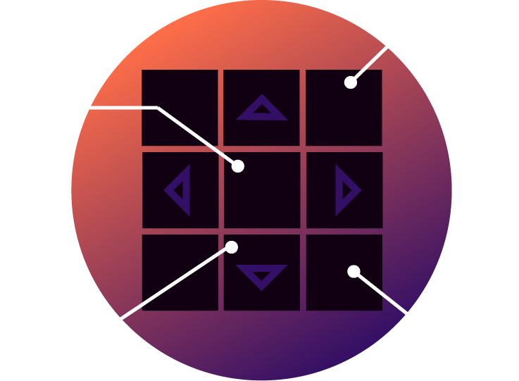

Mechanical
Overall, the board is 33 in by 33 in. Each different piece in the board is an 11 in by 11 in square. There are 4 different types of pieces within the board. The pieces are all removeable in order to satisfy our goal of making the board modular.
Arrow Piece
1: 11"x11" piece of polycarbonate, .09" thick, cut to size via bandsawing (since it can't be lasercut). This piece is meant to cover the rest of the arrow pad. We chose to use polycarbonate over acrylic due to it's toughness and resistance to being deformed. Since people would be putting their entire weight on this piece, we wanted to make sure that it was durable and wouldn't make people slip around. Frosted to diffuse light from the LEDs below it and aesthetics. There are four 1/8" thick, 1" tall dowels that are fixed to the acrylic (we used spring pins). We did this by drilling 3/16" holes in the corner of the polycarbonate. The dowels are meant to go through parts 3 and 4. They keep the pieces attached together for (a) easily managing the pressure pads/LEDs and (b) help disperse pressure to the center of the piece.
2: Made of 1/4" thick MDF, and fabricated through laser cutting. Below this part is another .1" tall foam part that elevates this piece. Below that is the pressure sensor. This causes piece 2 to be flush against piece 1, allowing pressure to be dispersed more evenly. This means that if you put your foot closer to the corner of the pad, it can still be read by the pressure sensor.
3: 11"x11" MDF piece that's 1/4" thick, cut via a laser cutter. Has 3/16" drilled holes in the corners for dowels to move through easily. LED strip can be placed along the edges of the inner triangle.
4: 11"x11" MDF piece that's 1/2" thick, cut via a panel saw. Has 3/16" drilled holes in the corners for dowels to move through easily. Is this thick to better support a dancer's weight. The hole in the center is to allow the wires from the LED and pressure sensor to travel through below.
5: The inner structure of the piece. Made using 10 crossbreams in total (4 more crossbeams than depicted in the graphic). Each crossbeam was laser cut using 1/4" thick MDF. They are .91" tall (to account for the height of the polycarbonate) and have 1/2" slots. They are fixed togther using hot glue, then fixed to part 6. There are small slots bandsawed through certain crossbeams in order to let wires that have traveled through from piece 4 pass through. Those wires then travel through to the center piece.
6: 11"x11" bottom cover. Made using 1/2" thick MDF. If you want to reduce slip, attach rubber feet to the bottom of this part.
Electrical House
This is where the Arduino and breadboard are housed. All wires from the arrow pieces flow into here. Has an inner structure similar to the arrow piece (minus the dowels/dowel holes, polycarbonate, and the top cover does not have a triangle cut into it) to allow for wires to pass through and for the Arduino/breadboard to stay in. Similar to the arrow piece, cross beams are cut in order to allow wires to travel through. The cover piece can be found here.
Corner Piece
11"x11" piece made from slabs of wood. Since nothing needs to be inside of the remaining corner pieces, these are made from stacks of four 1/2" MDF pieces and one 1/4" MDF cover to match the height of the other pieces. The cover piece can be found here.
Center Piece

The middle piece of the board. In order to allow for wires from all the different pieces to travel through to the electrical house, the center piece has a path through it for wires to go through. The path was cut using a bandsaw. Otherwise, they're the same as corner pieces. The piece to the left is the second to the bottom piece in the diagram above. The cover piece can be found here.